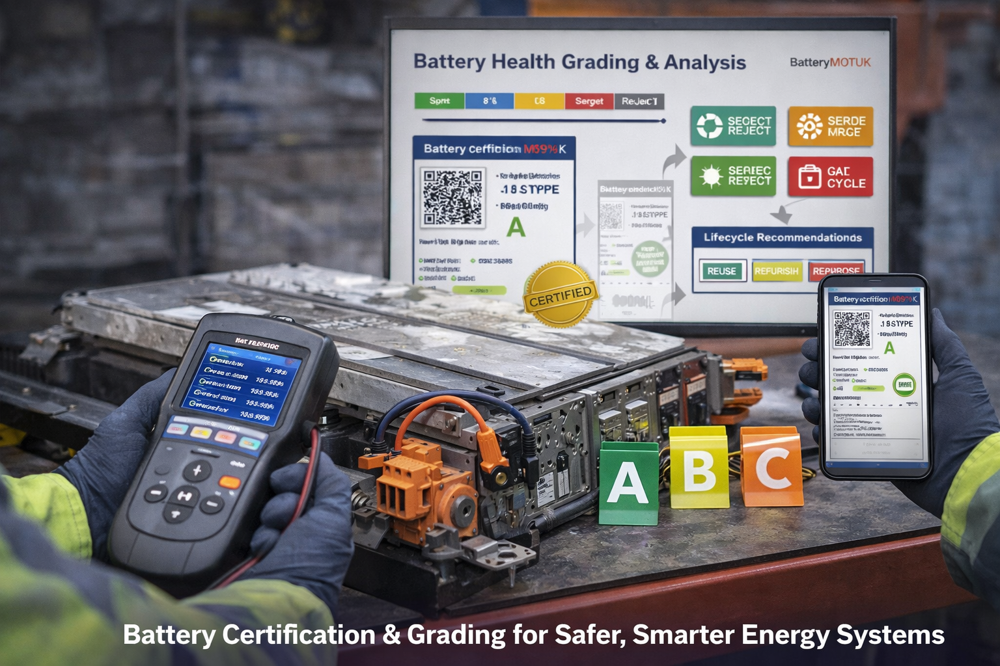
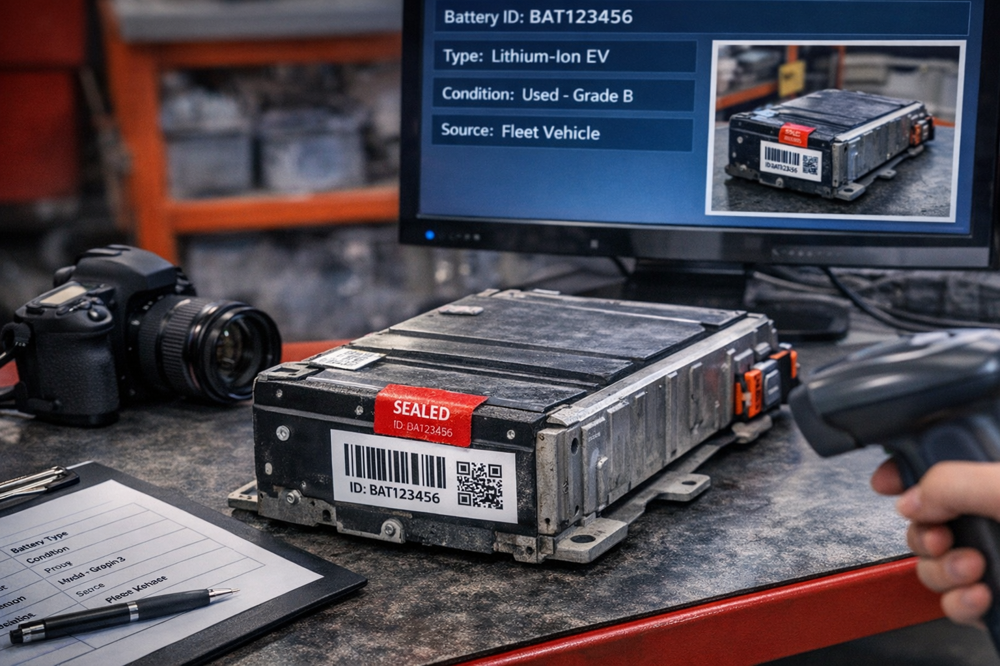
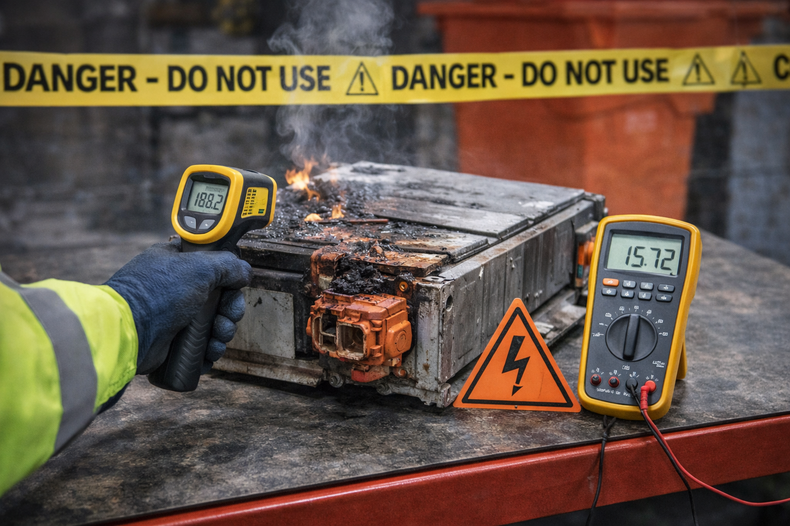
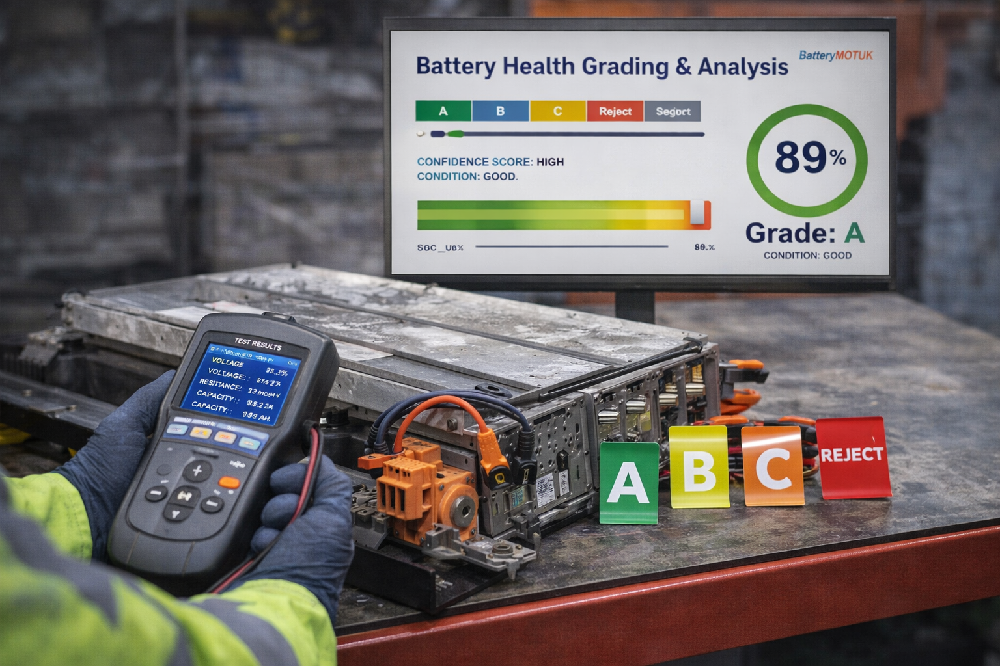
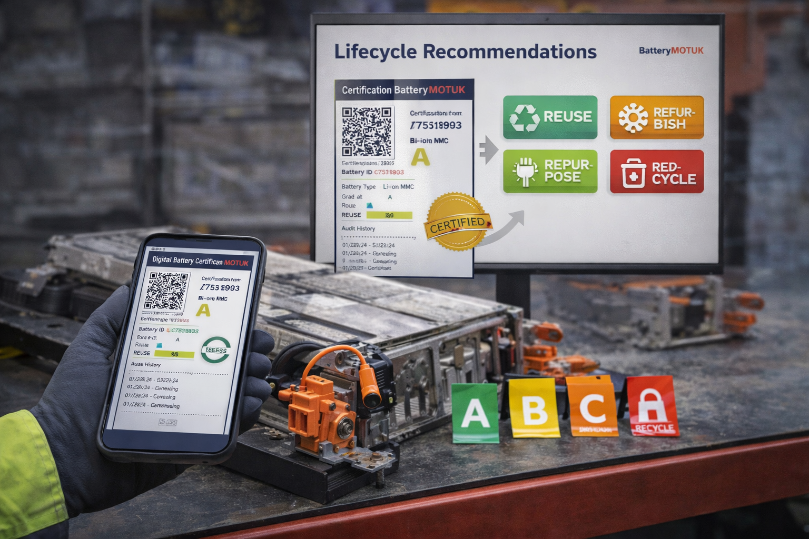
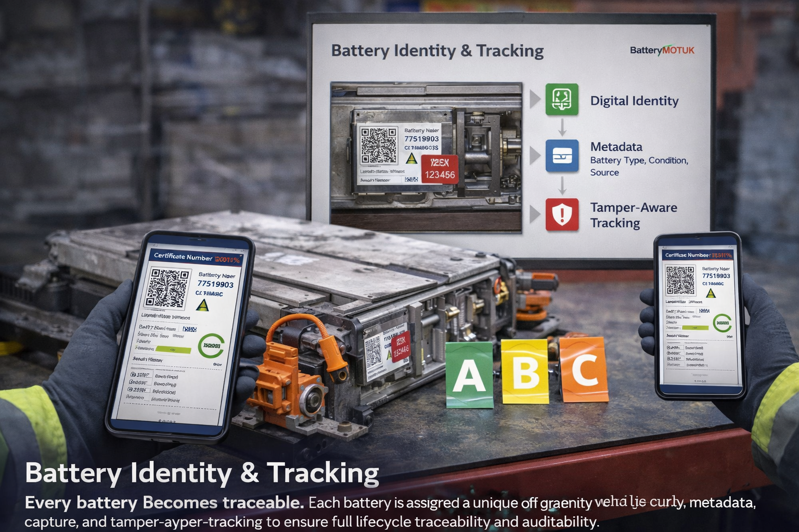
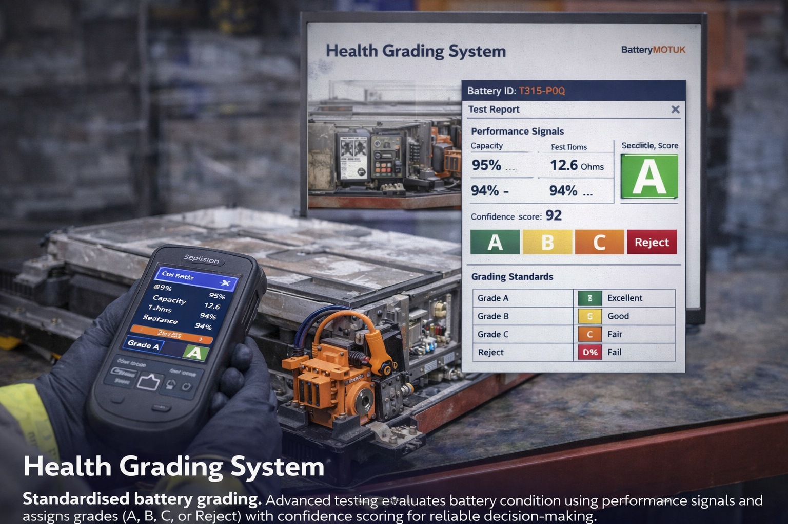
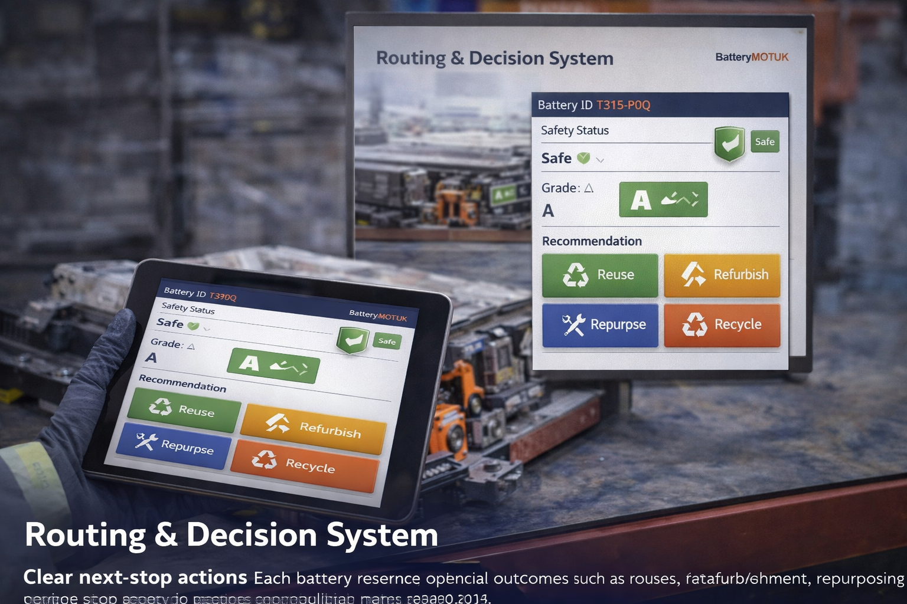

BatteryMOTUK is a battery grading and certification platform that transforms uncertain battery conditions into clear, auditable decisions. We combine safety testing, health grading, and digital certification to help businesses reduce risk, improve reuse value, and ensure safe battery lifecycle management.

BatteryMOTUK is an independent battery grading and certification platform designed to transform low-trust used battery markets into safe, traceable, and auditable systems.
The platform combines safety gateway testing, fast health grading, and digital certification to deliver clear decision outcomes for reuse, refurbishment, repurposing, or recycling reducing risk while increasing recovery value across battery lifecycles.
By introducing a standardised “Battery MOT” process, the company enables fleets, retailers, recyclers, and insurers to operate with confidence, backed by verified data, chain-of-custody tracking, and compliance-ready documentation.
Raja Irtaza Fayyaz, a Mechanical Engineer with expertise in systems design, operations, and engineering analysis, founded BatteryMOTUK to address a critical gap in battery safety, trust, and lifecycle management.
Through hands-on engineering experience and exposure to real-world operational systems, he identified the lack of a standard, independent certification layer for batteries leading to safety risks, poor traceability, and inefficient reuse decisions.
BatteryMOTUK was built to solve this problem by combining engineering rigor with structured decision systems, enabling a scalable and trustworthy battery ecosystem.
LinkedInBatteryMOTUK transforms uncertain battery conditions into clear, auditable decisions through a structured grading and certification process designed for safety, traceability, and lifecycle optimisation.

Each battery is registered with a unique ID, photographed, and assigned a tamper-evident seal. Metadata such as battery type, condition, and source is recorded to establish a traceable identity baseline.

A safety-first assessment checks for physical damage, overheating signs, and electrical risks. Unsafe batteries are immediately quarantined to prevent circulation and ensure compliance.

Advanced testing evaluates battery performance, resistance, and stability to assign a standardized grade (A, B, C, or Reject) along with a confidence score and operational condition.

A QR-linked digital certificate is generated with full audit history, safety classification, and recommended routing (reuse, refurbish, repurpose, or recycle), enabling safe and efficient lifecycle decisions.
BatteryMOTUK is a certification and decision platform that converts battery condition data into trusted, auditable outcomes for safe reuse, refurbishment, and recycling.

Every battery becomes traceable.
Each battery is assigned a unique digital identity with QR linkage, metadata capture, and tamper-aware tracking to ensure full lifecycle traceability and auditability.
Safety-first classification system.
The platform applies strict safety checks to detect risks such as damage, instability, or thermal issues, automatically blocking unsafe batteries from circulation.

Standardised battery grading.
Advanced testing evaluates battery condition using performance signals and assigns grades (A, B, C, or Reject) with confidence scoring for reliable decision-making.
Verified certification output.
Each battery receives a QR-linked certificate containing safety status, grading results, audit logs, and permitted usage conditions for trusted verification.

Clear next-step actions.
The platform recommends optimal outcomes such as reuse, refurbishment, repurposing, or recycling based on safety and economic logic.
Insights for better decisions.
Dashboards provide insights into battery performance, failure patterns, and lifecycle outcomes for fleets, recyclers, and insurers.
Transparent pricing aligned with battery volume, safety requirements, and operational scale. Designed to deliver measurable risk reduction and recovery value across battery lifecycles.
£8 – £15 / battery
£15 – £30 / battery
Custom Pricing
Understand how BatteryMOTUK ensures safety, traceability, and value recovery through structured battery grading and certification.
BatteryMOTUK is a battery grading and certification platform that evaluates battery safety, performance, and lifecycle condition to provide standardised grades and digital certificates.
Battery grading reduces safety risks, prevents unsafe reuse, and enables informed decisions for reuse, refurbishment, or recycling based on verified condition data.
Each battery goes through intake registration, safety inspection, performance testing, and grading. A QR-linked certificate is then issued with full audit history and routing recommendations.
Batteries are classified into standard grades such as A, B, C, or Reject, based on health, safety condition, and performance reliability.
BatteryMOTUK is designed for EV fleets, recyclers, refurbishers, insurers, and organisations managing large volumes of battery assets.
By providing verified battery condition data, businesses can reduce risk, recover more value from usable batteries, and optimise lifecycle decisions.
BatteryMOTUK provides advanced battery grading and certification to ensure safety, traceability, and performance reliability across battery ecosystems. Get in touch with our team to explore partnerships, certification services, or technical integration.
+92 3317222636
batterymotuk@outlook.com
United Kingdom